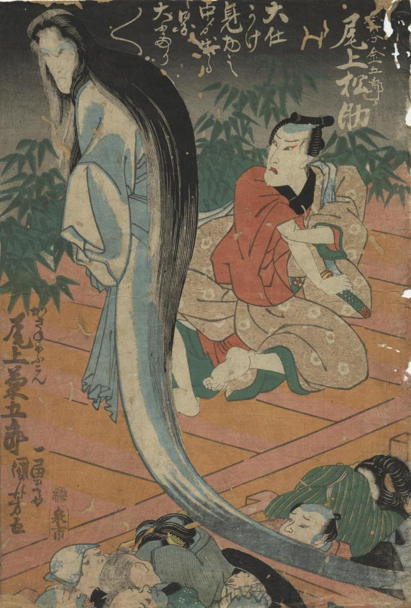

累が幽霊となって現われている。足がない。目のまわりは青白く、にらみつける表情をしている。
著作者：一勇斎國芳／出典：親書誌：U426_nichibunken_0368：かさね菊絹川染；カサネギク キヌガワゾメ／日付：2014／資源識別子：U426_nichibunken_0368_0001_0000
Copyright (c)2010- International Research Center for Japanese Studies, Kyoto, Japan. All rights reserved.